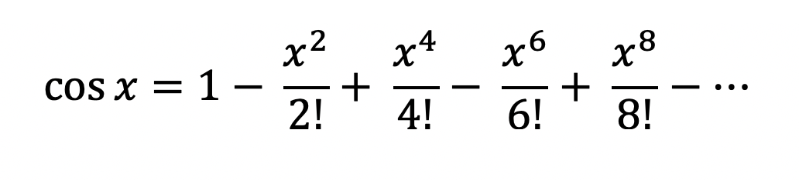
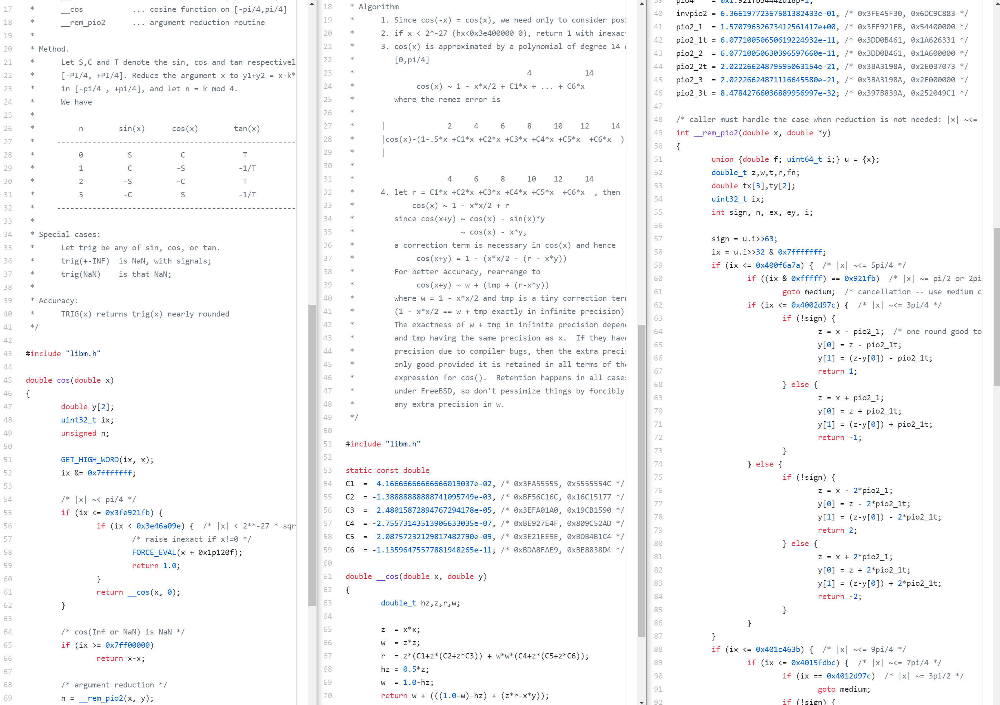
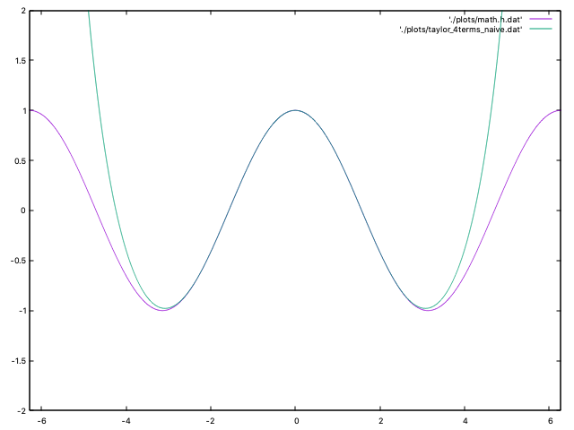
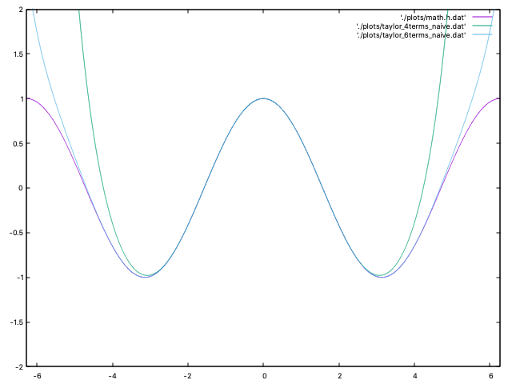
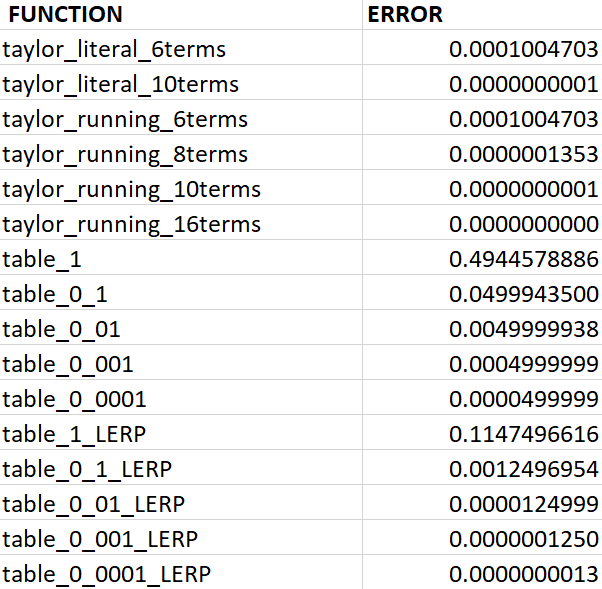
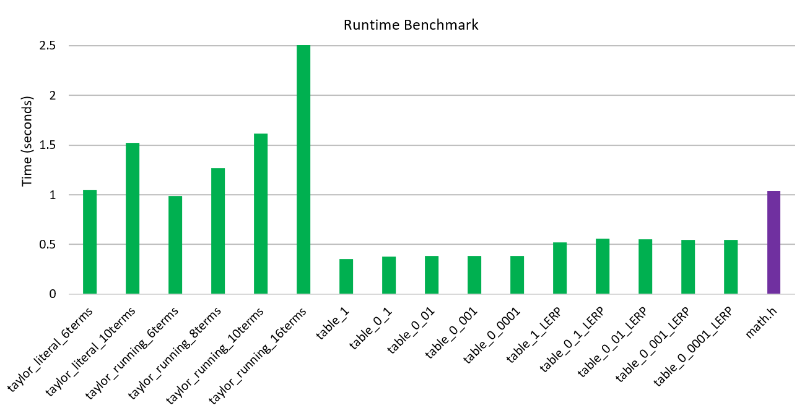

I work on dev tools.
Update 7/20: See the discussion of this post on Reddit.
TL;DR: I explored how to implement cosine using a few different approaches. One of the implementations is nearly 3x faster than math.h if you are ok with 4 decimal places of precision.
Have you ever wondered how the math library in your favorite programming language implements trigonometric functions, like cosine? It is such a common function that you can find in any and every math library so it must be fairly straight forward, right? Oh no. It most definitely is not.
This all started when my friend and colleague, Dr. Stephen Marz, was working on the kernel of an operating system and I suggested that he draw the cosine function on the screen. I often use cosine as a "hello, world" for graphical applications. The problem: his kernel can not use the C standard library (goodbye math.h!) and it targets the RISC-V architecture (nothing like the Intel fcos instruction!).
A long adventure ensued.
You must realize that I am neither a mathematician or a systems programming guru. In fact, out of my 10 years of college studying mathematics and computer science, I somehow never took a trigonometry course. So I'm going to walk you through my hurdles of investigating and implementing cosine in C. The goals are:
We will explore several ways to compute cosine and a few optimizations. Since I'm not a C ninja, I'll be avoiding any elaborate trickery or micro-optimizations (but if you know of some, let me know!). In fact, I often chose more readable code for slightly less performant code. We will benchmark as we go along to understand the implications of our actions. All of the code and benchmarks can be found in the GitHub repository.
Table of contents:
In all my time of coding, there has only been one situation in which I used cosine: games, games, games.
function move(obj) {
obj.x += obj.speed * Math.sin(obj.rotation);
obj.y += obj.speed * Math.cos(obj.rotation);
}
This is the basic code that I've used in virtually all my games to move an object in a given direction. Whether it be the player from a top-down perspective or projectiles flying across the screen.
It looks like this:
Maybe don't stare at that for too long...
When I initiated this transcendental rabbit hole, I found the Taylor series method of approximating cosine.
This seems to be the defacto way of calculating cosine in math libraries, at least at a high level. Given more terms, the approximation will be more accurate.
One thought that came to my mind is to use a lookup table. It is a precalculated array of values that can be used to look up the closest cosine value given some input. This wasn't uncommon at all back when computing power was more limited. I couldn't find any notable projects on GitHub that use a table for trig functions, but I'm sure they exist.
CORDIC is another term that kept popping up in my searches. It is an iterative method for computing functions like sine and cosine using only addition, subtraction, bit shifting, and a small lookup table. It was often implemented in hardware, going back to the late 1950s, or in software that often runs on low-end CPUs or microcontrollers, like those found in calculators. This method was quite popular in the past, and was used by the Intel 8087 Math Coprocessor, TI-85 calculator, and HP-48G calculator. However, I can't find any references of whether it is used much today. For more details, see the Wikipedia article or the original paper describing the method or check out an implementation written in C. I won't be comparing my methods to it, but I am a little curious how it holds up. Figure from the original paper:

Then there is the Intel CPU fcos instruction. The instruction computes cosine given a floating-point value in radians in the range -2^63 to 2^63 stored in a FPU register and replaces it with the result. I'm not sure if modern Intel CPUs still use the CORDIC method, and if so, whether it is implemented in hardware or software. After dissembling a few programs that use cosine, I could not find one that actually used the fcos instruction. Although it is fast, others have documented the inaccuracy of the instruction, most notably when the argument approaches multiples of pi/2. For more details, see this unofficial documentation or the official Intel reference.
Now, any sane person will just use C's math.h. And for everyday purposes, you probably should. But remember, we couldn't use anything from the standard library. Also, that wouldn't be any fun. I did compare the accuracy of math.h's cosine function on my computer to Wolfram Alpha. I found that math.h is accurate up to 15 digits of precision, which is way more than I will ever need.
To see how the standard library computes cosine, I went and looked at the source of several C standard library implementations. Glibc, Newlibc, Musl, etc. Even though they looked like they were using a Taylor series, these were a bit too much for me to get my head around. They were all very different from one another, often relied on several dense functions, were littered with magic numbers, had tables of precomputed values, and were using extensive bit trickery. Someone spent a lot of time on making these fast.
Here is a screenshot of when I was trying to walk through the relevant code in Musl. From cos() to __cos() to __rem_pio2().
Yikes.
As I progress through implementing the different methods of calculating cosine, I will be comparing them from two perspectives: runtime and accuracy. For runtime, each function is executed 100 million times using a range of input values and it is timed using time.h's clock function. For accuracy, it takes the difference of my function's results and math.h's results over a range of inputs, and returns the worst case. For example, an accuracy value of 0.0002 means that in the worst case, my implementation was 0.0002 off from math.h, for one input over a large range of inputs.
Here is the relevant code:
// Measures the time of many executions in seconds. Smaller number is better.
double runtime(double (*func)(double))
{
clock_t start = clock();
for (int i = 0; i < 100000000; i++)
{
volatile double c = func(i / 10000.0);
(void)c;
}
return (clock() - start) / (double)CLOCKS_PER_SEC;
}
// Finds the worst case for accuracy compared to math.h. Smaller number is better.
double accuracy(double (*func)(double))
{
double w = -1;
double start = 0;
double stop = CONST_2PI;
double step = 0.0000001;
for (double i = start; i < stop; i += step)
{
double c = absd(func(i) - cos(i));
if (c > w)
{
w = c;
}
}
return w;
}
The benchmark was compiled with clang 11.0.3 and ran on a 13-inch 2018 MacBook Pro with a 2.7GHz i7 CPU and 16GB of RAM.
You can find all the benchmark code in the GitHub repo. Thanks to Dr. Marz for rewriting it to have an easy to use interface.
First, I tried a literal translation of the Taylor series with 4 terms:
double cos_taylor_literal_4terms_naive(double x) {
return 1 - ((x*x)/(2)) + ((x*x*x*x)/(24)) - ((x*x*x*x*x*x)/(720)) + ((x*x*x*x*x*x*x*x)/(40320));
}
This seemed surprisingly accurate when I started testing it with input values like 0.1 and 0.235. My enthusiasm faded when I graphed it next to math.h:
The magenta line is math.h while green is my function. It looks fairly accurate between -pi and +pi, but then explodes.
Perhaps more terms will help.
double cos_taylor_literal_6terms_naive(double x) {
return 1 - ((x*x)/(2)) + ((x*x*x*x)/(24)) - ((x*x*x*x*x*x)/(720)) + ((x*x*x*x*x*x*x*x)/(40320)) - ((x*x*x*x*x*x*x*x*x*x)/(3628800)) + ((x*x*x*x*x*x*x*x*x*x*x*x)/(479001600));
}
Now if we graph that...
Much better. But it still explodes as it approaches to 2pi.
There were 3 possible improvements that jumped out at me at this point: reduce the range of the input, reduce the number of redundant calculations, and keep adding more terms.
The first optimization I tried was range reduction. The bigger the input value, the less accurate this method is. Since cosine repeats every 2pi, we want to just do x = x % (2*pi);. However, in C the modulus operator doesn't work on floating point numbers, so we made our own.
#define modd(x, y) ((x) - (int)((x) / (y)) * (y))
double cos_taylor_literal_6terms_2pi(double x)
{
x = modd(x, CONST_2PI);
return 1 - ((x * x) / (2)) + ((x * x * x * x) / (24)) - ((x * x * x * x * x * x) / (720)) + ((x * x * x * x * x * x * x * x) / (40320)) - ((x * x * x * x * x * x * x * x * x * x) / (3628800)) + ((x * x * x * x * x * x * x * x * x * x * x * x) / (479001600));
}
This is better for values over 2pi, but it is still very inaccurate leading up to 2pi. We can do better since the cosine values are equivalent every multiple of pi, except that the sign flips. To do that we can mod by 2pi, subtract pi if the value is greater than pi, calculate the Taylor series, and then apply the correct sign. So we are really only calculating cosine from 0 to pi.
double cos_taylor_literal_6terms_pi(double x)
{
x = modd(x, CONST_2PI);
char sign = 1;
if (x > CONST_PI)
{
x -= CONST_PI;
sign = -1;
}
return sign * (1 - ((x * x) / (2)) + ((x * x * x * x) / (24)) - ((x * x * x * x * x * x) / (720)) + ((x * x * x * x * x * x * x * x) / (40320)) - ((x * x * x * x * x * x * x * x * x * x) / (3628800)) + ((x * x * x * x * x * x * x * x * x * x * x * x) / (479001600)));
}
That helps the accuracy considerably as the input approaches 2pi.
The next optimization involved removing some of the redundant calculations. You'll notice the x*x everywhere in the code. All I did was reduce some of the multiplications with double xx = x * x;.
double cos_taylor_literal_6terms(double x)
{
x = modd(x, CONST_2PI);
char sign = 1;
if (x > CONST_PI)
{
x -= CONST_PI;
sign = -1;
}
double xx = x * x;
return sign * (1 - ((xx) / (2)) + ((xx * xx) / (24)) - ((xx * xx * xx) / (720)) + ((xx * xx * xx * xx) / (40320)) - ((xx * xx * xx * xx * xx) / (3628800)) + ((xx * xx * xx * xx * xx * xx) / (479001600)));
}
This was a massive performance win! I also tried double xxxx = xx * xx; but didn't see much of a difference, so I moved on.
I still wasn't sure how many terms to use. So I tried it up to 10 terms to see how it improves accuracy:
double cos_taylor_literal_10terms(double x)
{
x = modd(x, CONST_2PI);
char sign = 1;
if (x > CONST_PI)
{
x -= CONST_PI;
sign = -1;
}
double xx = x * x;
return sign * (1 - ((xx) / (2)) + ((xx * xx) / (24)) - ((xx * xx * xx) / (720)) + ((xx * xx * xx * xx) / (40320)) - ((xx * xx * xx * xx * xx) / (3628800)) + ((xx * xx * xx * xx * xx * xx) / (479001600)) - ((xx * xx * xx * xx * xx * xx * xx) / (87178291200)) + ((xx * xx * xx * xx * xx * xx * xx * xx) / (20922789888000)) - ((xx * xx * xx * xx * xx * xx * xx * xx * xx) / (6402373705728000)) + ((xx * xx * xx * xx * xx * xx * xx * xx * xx * xx) / (2432902008176640000)));
}
At this point, when looking at the graph the 10 terms line overlaps with math.h. Progress! When comparing the worst case accuracy with math.h, the 4 terms was a joke. The 6 terms was off by 0.0001, which is more accuracy than I need, while the 10 terms was off by a mere 0.00000000007. Woohoo!
However, more terms comes at a steep runtime cost. From the benchmark, the naive 4 terms only takes 0.4 seconds, 6 terms takes 0.94 seconds, and 10 terms takes 1.46 seconds. Meanwhile, math.h only takes about 1.04 seconds with even more accuracy.
Adding more terms with this approach looked a bit ridiculous, so I moved on.
After showing my progress to Dr. Marz, he did some algebra magic and sent me over his modified version. His method removes a lot of redundant calculations by storing them and has the added benefit of allowing you to specify how many terms in you want. For particular applications, this could be handy so that you can have varying degrees of precision/speed as a parameter.
double cos_taylor_running_yterms(double x, int y)
{
int div = (int)(x / CONST_PI);
x = x - (div * CONST_PI);
char sign = 1;
if (div % 2 != 0)
sign = -1;
double result = 1.0;
double inter = 1.0;
double num = x * x;
for (int i = 1; i <= y; i++)
{
double comp = 2.0 * i;
double den = comp * (comp - 1.0);
inter *= num / den;
if (i % 2 == 0)
result += inter;
else
result -= inter;
}
return sign * result;
}
For the sake of benchmarks, I did not use this version with the second parameter. Instead, I duplicated the function and hardcoded the loop to work for constant values (like 6, 10, and 16).
There are definitely diminishing returns with adding more terms. At 16 terms the worst case accuracy is off by 0.0000000000000009 but takes 2.57 seconds for the runtime benchmark. It isn't slow by any means at all, but compared to math.h... it is.
The other option I wanted to try is a lookup table. The idea is to precompute a bunch of values and hardcode them in an array. Lookup tables have existed looong before computers, so this isn't a novel technique. In this case, I'm hoping that giving up a bit of memory will provide a huge runtime win while still being accurate enough.
To generate the lookup table, Dr. Marz wrote a Python script that generates a C header file containing an array where each element is a cosine value that's calculated using math.h. Very smart!
from math import cos, pi
def main(f, PRECISION, NAME):
f.write("double %s[] = {\n" % NAME)
j = 0
p = 0.0
while True:
f.write("{:.20f}, ".format(cos(p)))
j += 1
p += PRECISION
if p > 2*pi:
break
f.write("1.0 };\n")
f.write("const int %s_size = %d;\n" % (NAME, j+1))
if __name__ == '__main__':
main(open("costable_1.h", "w"), 1.0, "costable_1")
main(open("costable_0_1.h", "w"), 0.1, "costable_0_1")
main(open("costable_0_01.h", "w"), 0.01, "costable_0_01")
main(open("costable_0_001.h", "w"), 0.001, "costable_0_001")
main(open("costable_0_0001.h", "w"), 0.0001, "costable_0_0001")
We wanted to test our tables with different precision. We generated tables with 8 values, 64 values, 630 values, 6285 values, and 62833 values. The cost comes in the form of an increased executable. The 1.0 and 0.1 tables aren't noticeable, but the other tables increased the executable size by about 5KB, 50KB, and 500KB, respectively.
double absd(double a) { *((unsigned long *)&a) &= ~(1UL << 63); return a; }
double cos_table_0_01(double x)
{
x = absd(x);
x = modd(x, CONST_2PI);
return costable_0_01[(int)(x * 100 + 0.5)];
}
The tables seem to hit a nice balance of accuracy. The worst case accuracy of the smallest table is 0.49, so not usable. But with each increase in the table size, you get 1 more digit of precision: 0.049, 0.0049, 0.00049, and 0.000049. The runtime test for each table was about 0.38. That is fast! (Actually, we got the runtime down to about 0.33, but the code was ugly.)
Sure, a lookup table is great, but we can do better for values that aren't in the table. Introducing, linear interpolation. This is just a cool sounding term for taking the weighted average between two values. Now when the input value isn't in the table, we will compute an approximation based on which table entry is closer. The code:
#define lerp(w, v1, v2) ((1.0 - (w)) * (v1) + (w) * (v2))
double cos_table_0_01_LERP(double x)
{
x = absd(x);
x = modd(x, CONST_2PI);
double i = x * 100.0;
int index = (int)i;
return lerp(i - index, /* weight */
costable_0_01[index], /* lower value */
costable_0_01[index + 1] /* upper value */
);
}
Here is a comparison of our functions for worst case accuracy compared to math.h (lower is better!):
Here is a comparison of our functions for runtime to compute 100,000,000 values (lower is better!):
So what do I recommend using? Math.h if possible. None of these functions are particularly slow, and most of them are accurate enough. But the next time I make a game that depends heavily on trig functions, I'll be using the 0_001 table.
Until the next rabbit hole.